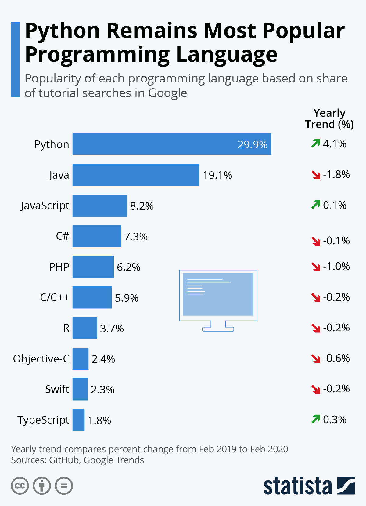

Introduction à Python
Romain AVOUAC, Julien PRAMIL
Contexte
Python en résumé
Créé par Guido van Rossum en 1991
Langage de haut-niveau
- Syntaxe simple et lisible
- Principes : “Zen de Python”
Langage puissant
- Versatile : riche bibliothèque de packages
- Fédère des communautés diverses
- Datascience, recherche
- Développement web
- Cybersécurité, fintech, etc.
Pourquoi se former à Python ?
- Un langage extrêmement dynamique

Pourquoi se former à Python ?
- Langage central de l’écosystème data science

Source : josephsalmon.eu
Pourquoi se former à Python ?
- Unifier les pratiques via un langage commun ?
- Métier : application des méthodes de data science
- Développement : frameworks de développement applicatif
- Production : adapté à la production informatique
Python vs. R ?
- Différence fondamentale
R: langage statistiquePython: langage généraliste
- Plutôt complémentaires que concurrents
- Préférer l’un ou l’autre selon le cas d’usage
- Transition d’un langage à l’autre accessible
Modalités de formation
Une “e-formation tutorée”
- E-formation
- Formation sur un temps long
- Pédagogie par la pratique
- Tutorat
- Canal Tchap : SSPy - Formation “Initiation à Python” : pour poser toutes vos questions en continu
- Visio périodique : questions de fond, déroulement pas à pas..
Les visio périodiques
Bureau ouvert pour poser vos questions.
Une thématique principale mais pas unique par visio.
Dates proposées :
- mardi 7 janvier 10h30-12h (manipulation de données)
- mardi 21 janvier 10h30-12h (POO, fichiers, numpy)
- mardi 4 février 10h30-12h (pandas)
- vendredi 14 février 13h30-16h30 (projets + bilan)
Hébergée sur le SSP Cloud
- Plateforme développée à l’Insee
- Expérimentation autour de la data science
- Travail sur données ouvertes
- Environnement particulièrement adapté à la formation
- Pré-configuré
- Reproductibilité
Programme de la formation
- Trois grandes parties
- Fondamentaux du langage
- Manipulation de données
- Projets
- Applications : cas d’usage de statistique publique
En pratique
Les notebooks Jupyter
- Un format de type notebook (cahier) interactif qui combine
- Du texte
Markdown(texte, équations, etc.) - Du code
Python - Du code
HTML(visualisations, animations..)
- Du texte
- Particulièrement adapté aux phases d’expérimentation
Démo
- Seul pré-requis : créer un compte sur le SSP Cloud
Mail pro
Utilisez votre mail professionnel (ex : @insee.fr) pour avoir accès à la plateforme.
FAQ
Accès aux supports
Tous les supports de formation restent accessibles sur le SSP Cloud après la formation
Le code qui génère les supports est disponible sur GitHub
Après la formation ?
Suite logique : Python pour la data science (ENSAE)
Orientation algorithmie : Advent of Code
Utiliser Python dans des projets statistiques
- Modalités selon la nature des données utilisées
- Projets open-data : SSP Cloud
- Projets internes Insee : AUSV3 / LS3
Formation “Introduction à Python”
Comment résoudre les bugs ?